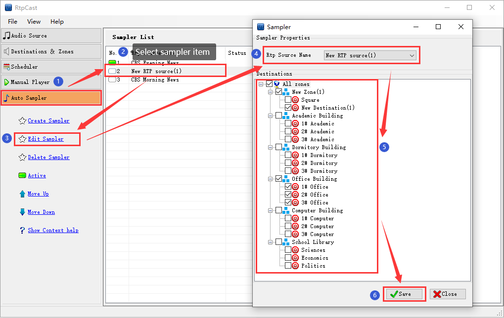

|  |
|
Introduction |
|
Edit sampler's information. |
|
Operation |
| Select the sampler from the sampler list, and then click [Edit Sampler] in the left navigation panel, or double-click the sampler directly in the sampler list. the system will pop up the editing window of sampler. The other operation is similar to [Create Sampler]. |